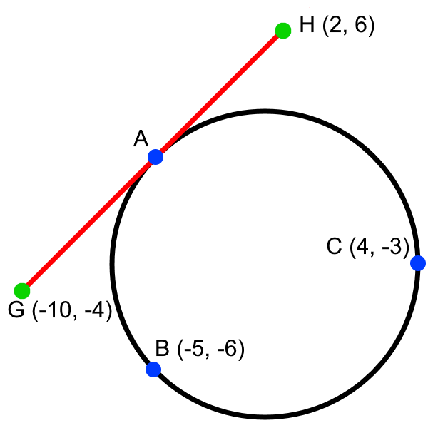

Math Caching
Chapter 2-3 Review
Jump to clue
Midpoint - Point that divides a line segment into two equal line segments.
Equidistant - Equally distant.
Bisector - The point or a line that divides a line or angle into two equal parts.
Right Bisector -The line that passes through the midpoint of a line segment and intersects it
at a 90° angle.
The average of the two opposite points of a line will give you the midpoint.
Midpoint equation - \((\frac{x_1+x_2}{2},\frac{y_1+y_2}{2})\)
The length of a line segment can be deduced from the run, rise, and Pythagorean Theorem:
\(run^2 + rise^2 = length^2\), isolating length gives the following equation:
\(d=\sqrt{(run)^2+(rise)^2}\)
This can also be represented in an equation using the points of the line.
Length of a line segment - \(d=\sqrt{(x_2-x_1)^2+(y_2-y_1)^2}\)
h and k represent how offset the center of the circle is from the origin.
x and y represent a point on the circle.
Equation of a circle - \((x-h)^2+(y-k)^2=r^2\)
Concurrent - Meeting at a single point.
Median - Line segment joining a vertex of a triangle to the midpoint of the opposite side,
bisects the area of the triangle.
Altitude - The height of a geometric shape.
Centroid - The point where the three medians of a triangle intersect, also the center of
mass.
Circumcenter - The point of intersection of the three right bisectors of a triangle.
Centroid - The point where the three medians of a triangle intersect.
Incenter - The point at which the three angle bisectors of a triangle meet.
Orthocenter - The point at which the three altitudes of a triangle meet.
-
Quadrilateral Definitions:
- Trapezoid:
- - Only one set of parallel sides
- Parallelogram:
- - Opposite sides are congruent
- Opposite sides are parallel
- Diagonals bisect each other
- Opposite angles are congruent - Rectangle:
- - All angles are 90°
- Diagonals are congruent
- All properties of parallelograms - Rhombus:
- - Diagonals bisect the angles
- Diagonals are perpendicular
- All sides are congruent
- All properties of a parallelogram - Square:
- - All sides and diagonals are congruent
- Sides are perpendicular to each other
- All properties of rhombuses, rectangles, and parallelograms - Kite:
- - Diagonals are perpendicular
- All properties of parallelograms
The diagonals of a parallelogram bisect each other.
If you connect the adjacent midpoints of any quadrilateral you will get a parallelogram.
The line segment that connects the two midpoints of the nonparallel sides of a trapezoid is parallel to the
parallel sides, and is equal to the mean of the lengths of the parallel sides
Chord -A line segment joining two points on a curve.
The right bisector of a chord of a circle passes through the circle's center, the point of intersection of two
right bisectors of different chords is the circle's center.
Only one circle passes through three non-collinear points
Circumcircle -A circumscribed circle is a circle that passes through all of the vertices of a
triangle, the
center of the circle is the circumcenter.
Incircle -An inscribed circle is a circle that is tangent to each of the triangle's sides, the
center of the
circle is the incenter.
Math Caching Clue
-
The diagram below shows a circle (black) that passes through points A, B, and C (blue). Point A lies in the
middle of points G and H (green). Find the radius of the circle. (8 marks)

-
Bob lives at (-8, 8) and Alice lives at (2, -4), the city is placing a wind turbine in their area, the
zoning laws state that it must be equally distant from each house. The wind turbine must also be built on an
existing power line, if the power line has an equation of \(y=-\frac{1}{2}x-7.5\) where must the wind
turbine be built? Input answer with two comma-space separated values in parentheses, e.g. (1, -1)
(5 marks)
1.
The radius of a circle can be found with the equation of a circle, we first need to find the center of a
circle
to complete the equation. It can be found by finding the intersection point of two right bisectors of two
different chords. We will use chords \(\overline{BC}\) and \(\overline{AC}\).
Slope: \(m=\frac{\Delta y}{\Delta x}\)
Midpoint: \((\frac{x_1+x_2}{2},\frac{y_1+y_2}{2})\)
Length:
\(d=\sqrt{(x_2-x_1)^2+(y_2-y_1)^2}\)
Circle: \((x-h)^2+(y-k)^2=r^2\)
Line: \(y=mx+b\)
Find the negative reciprocal of the slope of \(\overline{BC}\):
\(\frac{-6-(-3)}{-5-4}=\frac{1}{3}↺-3\)
Find the midpoint of BC:
\((\frac{-5+4}{2},\frac{-6-3}{2})=(-0.5, -4.5)\)
Find the equation for the line that right bisects \(\overline{BC}\) by substituting the negative reciprocal
and the midpoint:
\begin{aligned}(-4.5)&=(-3)(-0.5)+b\\
b&=(-6)\\
y&=(-3)x-6\end{aligned}
(2 marks)
Point A is the midpoint of \(\overline{GH}\), use the midpoint equation:
\((\frac{-10+2}{2}, \frac{-4+6}{2})=(-4, 1)\)
Find the negative reciprocal of \(\overline{AC}\):
\(\frac{1-(-3)}{-4-4}=\frac{-1}{2}↺2\)
Find the midpoint of \(\overline{AC}\):
\((\frac{-4+4}{2}, \frac{-6+(-3)}{2})=(0, 1)\)
Find the equation for the line that right bisects \(\overline{AC}\) by substituting the negative reciprocal
and the midpoint:
\begin{aligned}(-1)&=(2)(0)+b\\
b&=(-1)\\
y&=(2)x-1\end{aligned}
(2 marks)
Set the right bisector equations to equal each other, solve for \(x\):
\begin{aligned}
(-3)x-6&=2x-1\\
(-5)&=5x\\
(-1)&=x
\end{aligned}
Substitute in \(x\) into one of the equations to solve for \(y\):
\begin{aligned}
y&=2(-1)-1\\
y&=(-3)
\end{aligned}
The equation of the circle is:
\((x+1)^2+(y+3)^2=r^2\)
Substitute a point on the circle into the equation and solve for \(r\):
\begin{aligned}
(4+1)^2+((-3)+3)^2&=r^2\\
25+0&=r^2\\
5&=r
\end{aligned}
(2 marks)
\(∴ \text{The radius of the circle is 5}\) (2 marks)
2.
Find the midpoint between Bob and Alice's house:
\((\frac{-8+2}{2},\frac{8+(-4)}{2})=(-3, 2)\)
Find the negative reciprocal of the slope of the line between Bob and Alice's house:
\(\frac{8-(-4)}{-8-2}=-\frac{6}{5}↺\frac{5}{6}\)
Substitute the negative reciprocal and the midpoint to solve the line that is equidistant from each house:
\begin{aligned}
2&=\frac{5}{6}(-3)+b\\
b&=4.5\\
y&=\frac{5}{6}x+4.5
\end{aligned}
(1 mark)
Set that equation and the power line equation to equal each other, solve for \(x\):
\begin{aligned}
\frac{5}{6}x+4.5&=-\frac{1}{2}x-7.5\\
12&=-\frac{4}{3}x\\
(-9)&=x
\end{aligned}
Substitute \(x\) into one of the equations to solve for \(y\):
\begin{aligned}
y&=\frac{5}{6}(-9)+4.5\\
y&=(-3)
\end{aligned}
(2 marks)
\(∴ \text{The the wind turbine must be built at (-9, -3)}\) (2 marks)